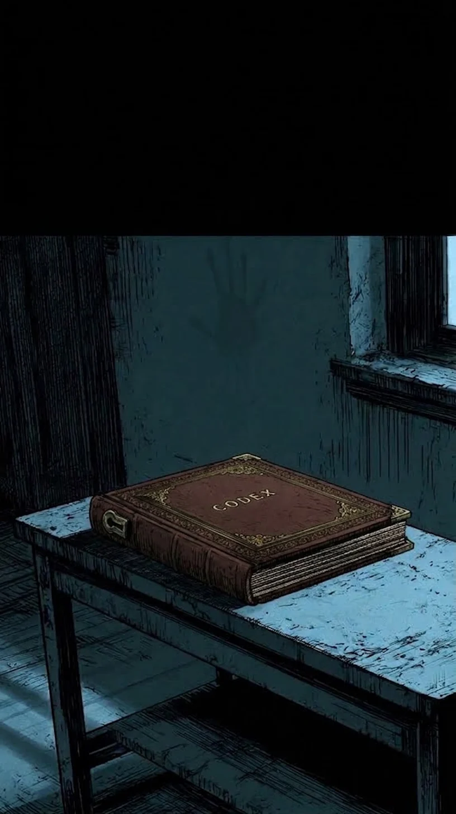
Codex
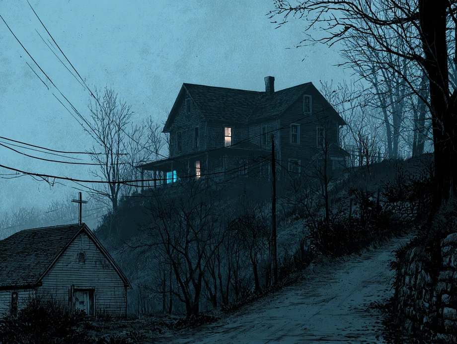
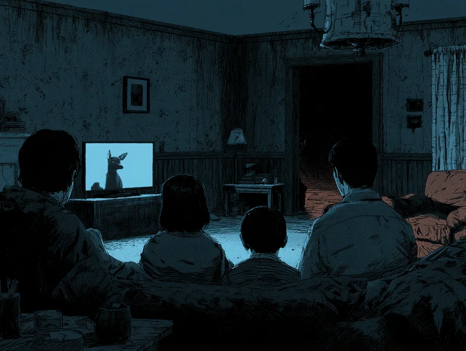
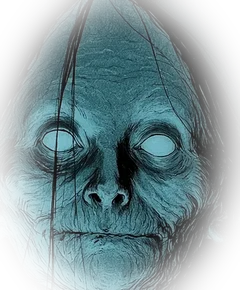
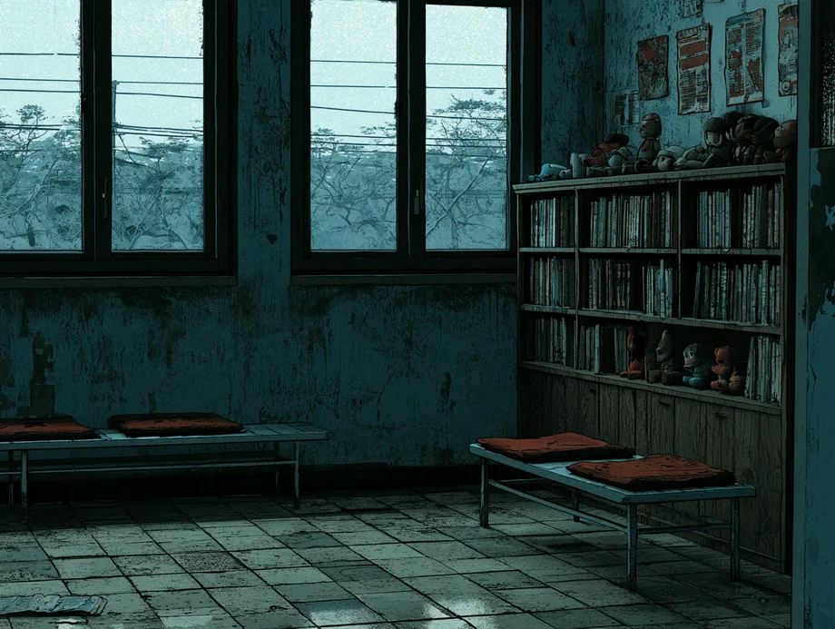
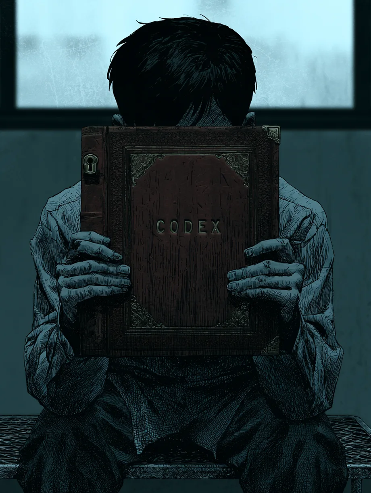
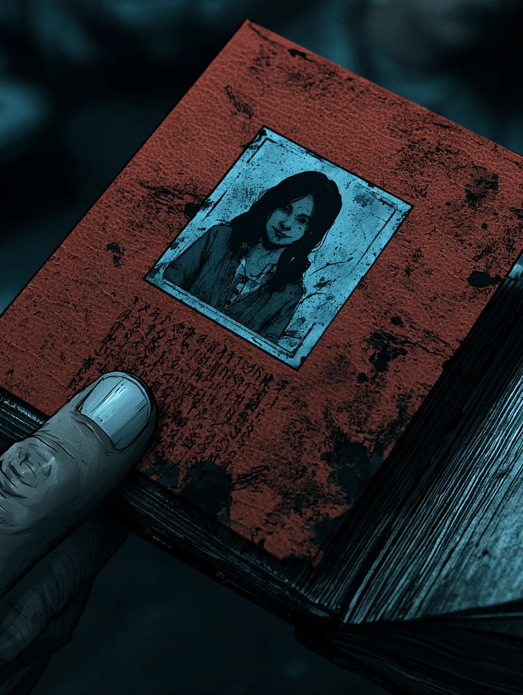
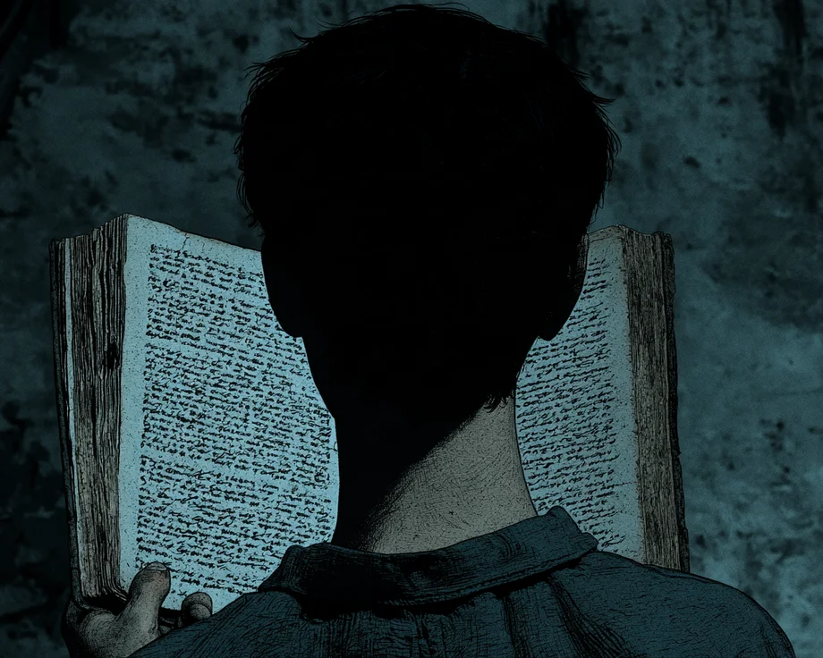
for every word spoken between them.
I read every affair
from inside the lover’s skin.
I wanted what they wanted.
I thought what they thought.
Her prose was so beautiful,
I let it possess me.
I wanted her to be talking to me.
So I started talking back.
— ᛟ · 2 1 4 · ᛟ —
ĠĠΔ ᚱᛟЖⁿʖ ʖᛗᛞ ᚱⁿʖᛗЖѦ ird
ᛜ⌬⊹ᛗ ∷ѦψʖʖᛞΔ Жⁿʖ Жᚷ ᛞ∴ᛞѦ⌬ʖᛗψΔᛜ ᚱΔ⌬ЖΔᛞ ᛞ∴ᛞѦ ǂᛞʖ ᛁЖ∷Δ
ΔЖ ᛗЖⁿǂᛞ Жᚷ ψʖǂ Ж∷Δ e⁻⁴ ǂ⍉∴⍉⊹ᛟ
om ψʖ ѦᛞθᛞθᛟᛞѦǂ ᛞ∴ᛞѦ⌬ ѦᛞᚱᛁᛞѦ mer⍉
ᚱΔᛁ ᛞ∴ᛞѦ⌬ ѦᛞᚱᛁᛞѦ'ǂ ᛁЖЖѦ mer∷
ψᚷ ⌬Жⁿ ᛗᚱ∴ᛞ Ѧᛞᚱᚨᛗᛞᛁ ʖᛗψǂ ѯᚱᛜᛞ ψʖ ᚱζѦᛞᚱᛁ⌬ ξΔЖ∷ǂ ʖᛗᛞ ∷ᚱ⌬ ʖЖ ⌬ЖⁿѦǂ
⌬ЖⁿѦ ᛗЖⁿǂᛞ ЖΔ ʖᛗᛞ ᛗψζζ
··ѯЖᚱ ǂᛞᛞ ⌬Жⁿ ʖЖΔψᛜᛗʖ
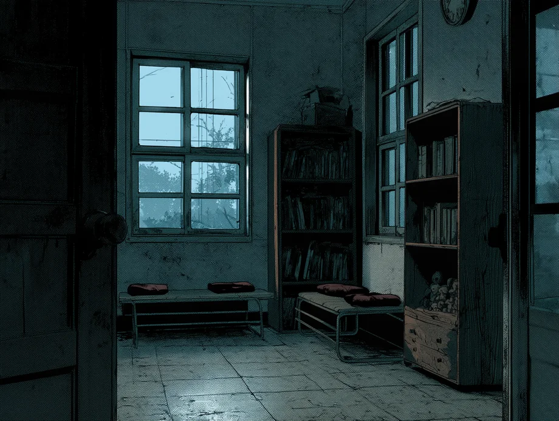
— ᛟ · 2 1 4 · ᛟ —
ĠĠΔ ᚱᛟЖⁿʖ ʖᛗᛞ ᚱⁿʖᛗЖѦ ird
ᛜ⌬⊹ᛗ ∷ѦψʖʖᛞΔ Жⁿʖ Жᚷ ᛞ∴ᛞѦ⌬ʖᛗψΔᛜ ᚱΔ⌬ЖΔᛞ ᛞ∴ᛞѦ ǂᛞʖ ᛁЖ∷Δ
ΔЖ ᛗЖⁿǂᛞ Жᚷ ψʖǂ Ж∷Δ e⁻⁴ ǂ⍉∴⍉⊹ᛟ
om ψʖ ѦᛞθᛞθᛟᛞѦǂ ᛞ∴ᛞѦ⌬ ѦᛞᚱᛁᛞѦ mer⍉
ᚱΔᛁ ᛞ∴ᛞѦ⌬ ѦᛞᚱᛁᛞѦ'ǂ ᛁЖЖѦ mer∷
ψᚷ ⌬Жⁿ ᛗᚱ∴ᛞ Ѧᛞᚱᚨᛗᛞᛁ ʖᛗψǂ ѯᚱᛜᛞ ψʖ ᚱζѦᛞᚱᛁ⌬ ξΔЖ∷ǂ ʖᛗᛞ ∷ᚱ⌬ ʖЖ ⌬ЖⁿѦǂ
⌬ЖⁿѦ ᛗЖⁿǂᛞ ЖΔ ʖᛗᛞ ᛗψζζ
··ѯЖᚱ ǂᛞᛞ ⌬Жⁿ ʖЖΔψᛜᛗʖ
I had no idea what that was.
It sounded… almost human.
Astra?
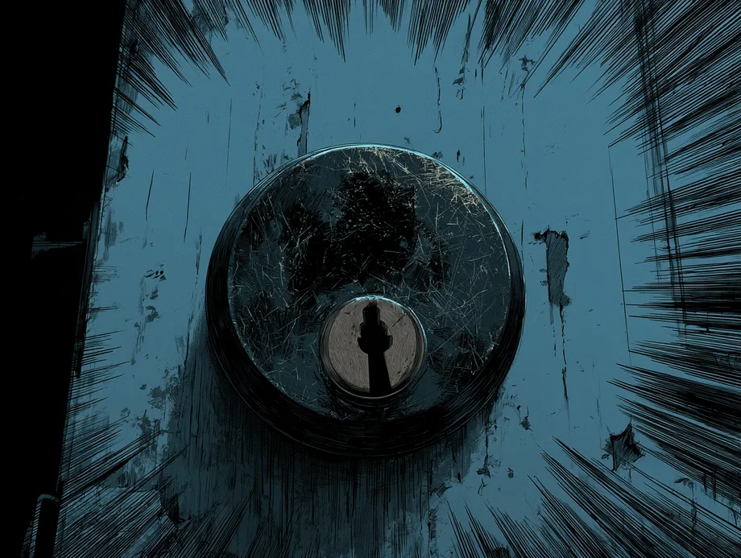
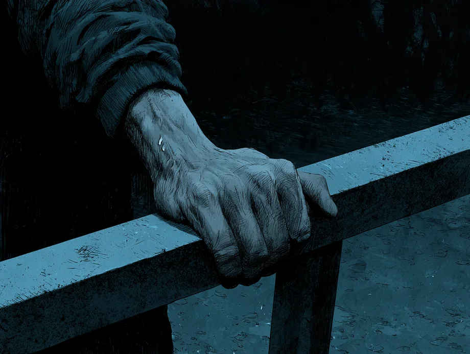
Even in its decrepit state.
She just stood there.
Looking at me.
For a long time.
Eventually, she just… left.
On her own.
It felt invasive,
even though she never stepped inside.
I waited a long time,
until I couldn’t hear her howling anymore.
The back door.
It isn’t locked.
She could come through there so easily.
I should lock it. In case she came back.
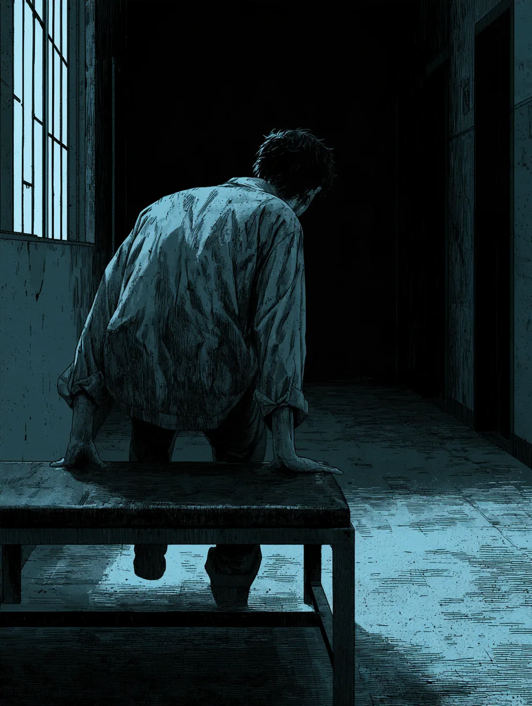
Locking it wouldn’t have mattered.
I’d already let her in.
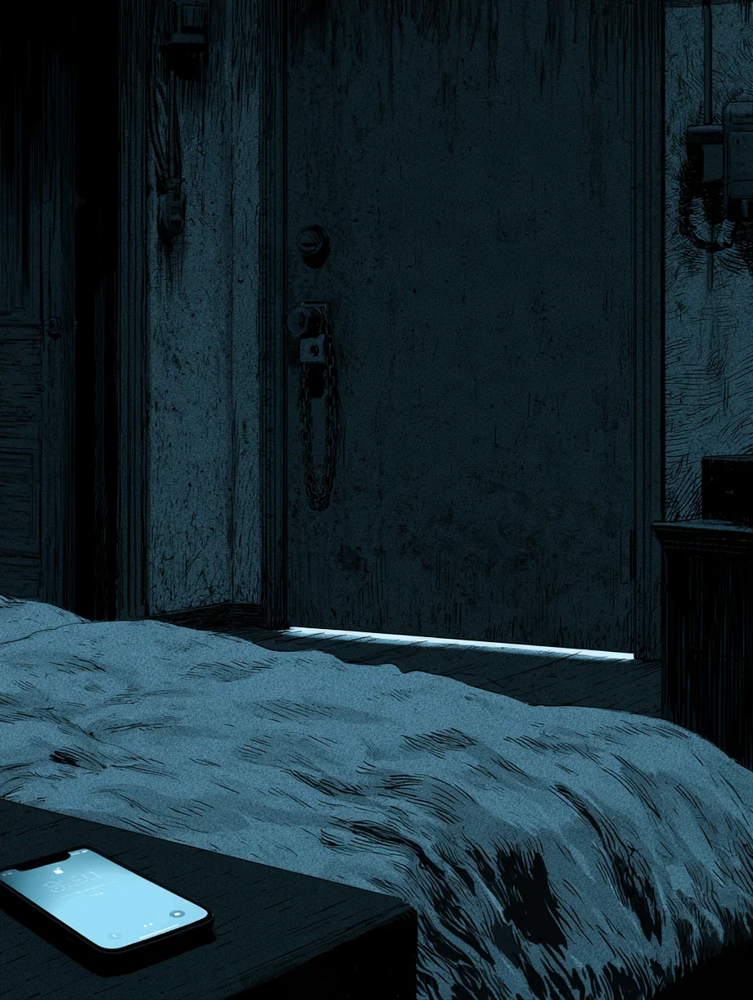
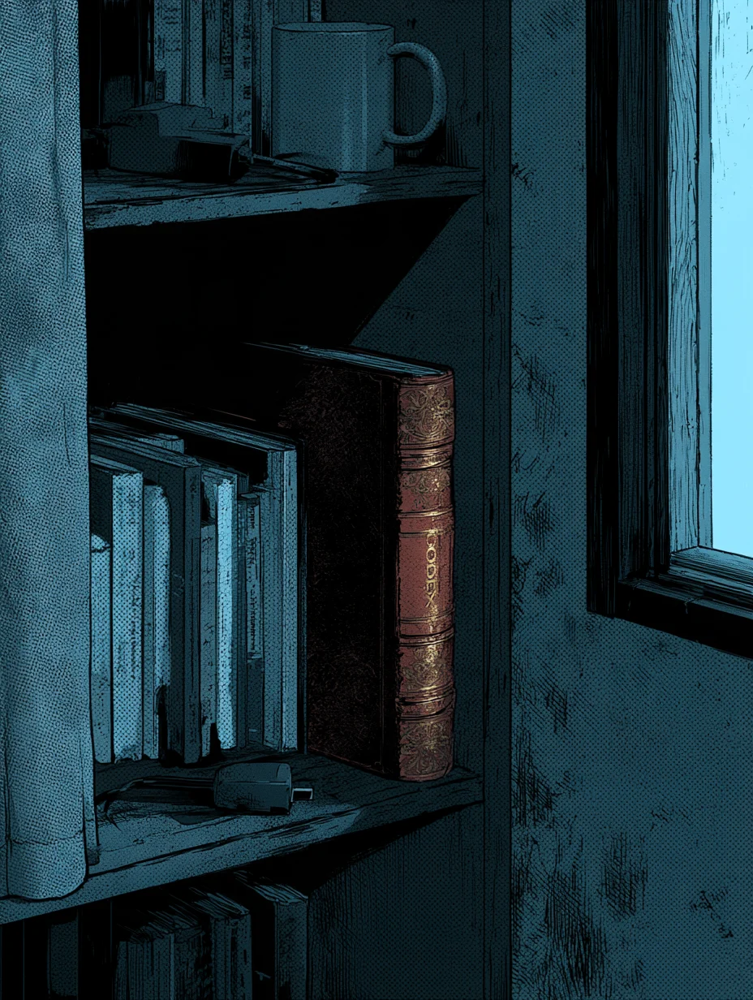
— ᛟ · 2 1 4 · ᛟ —
ĠĠΔ ᚱᛟЖⁿʖ ʖᛗᛞ ᚱⁿʖᛗЖѦ ird
ᛜ⌬⊹ᛗ ∷ѦψʖʖᛞΔ Жⁿʖ Жᚷ ᛞ∴ᛞѦ⌬ʖᛗψΔᛜ ᚱΔ⌬ЖΔᛞ ᛞ∴ᛞѦ ǂᛞʖ ᛁЖ∷Δ
ΔЖ ᛗЖⁿǂᛞ Жᚷ ψʖǂ Ж∷Δ e⁻⁴ ǂ⍉∴⍉⊹ᛟ
om ψʖ ѦᛞθᛞθᛟᛞѦǂ ᛞ∴ᛞѦ⌬ ѦᛞᚱᛁᛞѦ mer⍉
ᚱΔᛁ ᛞ∴ᛞѦ⌬ ѦᛞᚱᛁᛞѦ'ǂ ᛁЖЖѦ mer∷
ψᚷ ⌬Жⁿ ᛗᚱ∴ᛞ Ѧᛞᚱᚨᛗᛞᛁ ʖᛗψǂ ѯᚱᛜᛞ ψʖ ᚱζѦᛞᚱᛁ⌬ ξΔЖ∷ǂ ʖᛗᛞ ∷ᚱ⌬ ʖЖ ⌬ЖⁿѦǂ
⌬ЖⁿѦ ᛗЖⁿǂᛞ ЖΔ ʖᛗᛞ ᛗψζζ
··ѯЖᚱ ǂᛞᛞ ⌬Жⁿ ʖЖΔψᛜᛗʖ
— END —